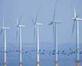

Global energy prices extend losses as Brent crude drops nearly 5% on hopes of US-Iran deal
Brent falls to $93.5 per barrel, WTI drops 3.48% to $87.7, European natural gas declines 3.95%

Brent falls to $93.5 per barrel, WTI drops 3.48% to $87.7, European natural gas declines 3.95%
Fu Chengyu, the former chairman of leading oil giants Sinopec and China National Offshore Oil Corporation (CNOOC), is under investigation for corruption by the country’s top watchdogs. The Communist Party’s Central Commission for Discipline Inspection (CCDI) was investigating Fu

Neso issued ‘electricity margin notice’ for gas power plants in Britain to fire up and boost generation this morning amid energy shortfall The government body tasked with keeping the lights on issued a rare call for more electricity supplies on Monday morning due to low wind powe
Trump still considering new assault on Iran nuclear sites – though threats less credible after Vance remarks Qatar, the lead mediator in the US-Iran conflict, is seeking to persuade Tehran to allow UN nuclear weapons inspectors to visit Iran’s bombed nuclear sites, including thos

With a political solution to the Iran war still elusive, Dr Anwar Gargash, diplomatic adviser to President Sheikh Mohamed, said the region should be ready for “for a long period of uncertainty”. He was speaking at the Abu Dhabi Strategic Debate forum on Monday. “The consequences
Belirli bir şey mi arıyorsunuz? Tüm haberlerde ara.